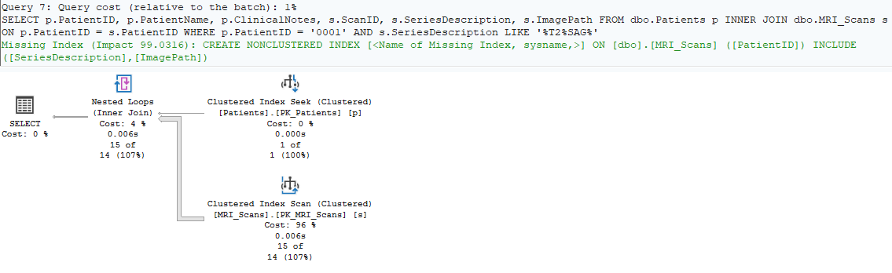
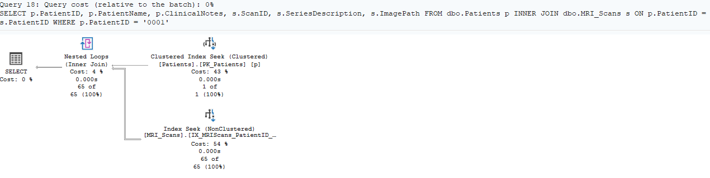
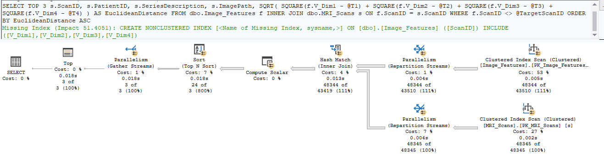
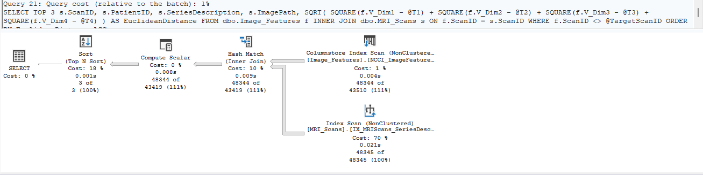

- Baselineprimary keys only
- StorageB-tree depth 2–3
- Designcovering, filtered, columnstore
- PlansScan → Seek
- Benchmarkreads, CPU, time
Why the baseline is slow
In the restored database the only indexes are the clustered primary keys. Patients is 2 levels deep (8 leaf pages); MRI_Scans and Image_Features are 3 levels deep (1,876 and 3,900 leaf pages).
Because MRI_Scans.PatientID has no index, Q1 and Q2 must scan all 1,876 leaf pages — 1,880 logical reads — to return 65 rows (Q1) or 15 rows (Q2). SQL Server even tells us so with a Missing Index warning of 99 % impact.
Which index for which query
Covering B-tree
(PatientID, SeriesDescription) INCLUDE (ImagePath). The seek jumps straight to the 65 slices of one patient and needs no Key Lookup because the path is stored in the index leaf.
Filtered index
A LIKE '%T2%SAG%' predicate is not allowed in a filtered index (Msg 10735). We profiled the column and listed the 32 T2-sagittal series codes explicitly.
Columnstore
A non-clustered columnstore on ScanID, V_Dim1…4 stores the four floats in compressed segments and enables batch mode (≈900 rows per CPU step).
Before and after, in SSMS

PK_MRI_Scans = 96 % of the cost, with a Missing Index warning.


Image_Features drops from 53 % to 1 % of the plan.Reads, CPU and elapsed time
| Query | State | Total reads | CPU (ms) | Elapsed (ms) | Main operator |
|---|---|---|---|---|---|
| Q1 | Baseline | 1,882 | 15 | 72 | Clustered Index Scan |
| Covering index | 8 | 0 | 37 | Index Seek, 0 Key Lookups | |
| Q2 | Baseline | 1,882 | 0 | 132 | Clustered Index Scan |
| Covering index | 8 | 0 | 123 | Index Seek + residual filter | |
| Q3 | Baseline | 5,881 | 76 | 144 | Parallel scan, row mode |
| Columnstore | 1,812 | 47 | 163 | Columnstore scan, batch mode |